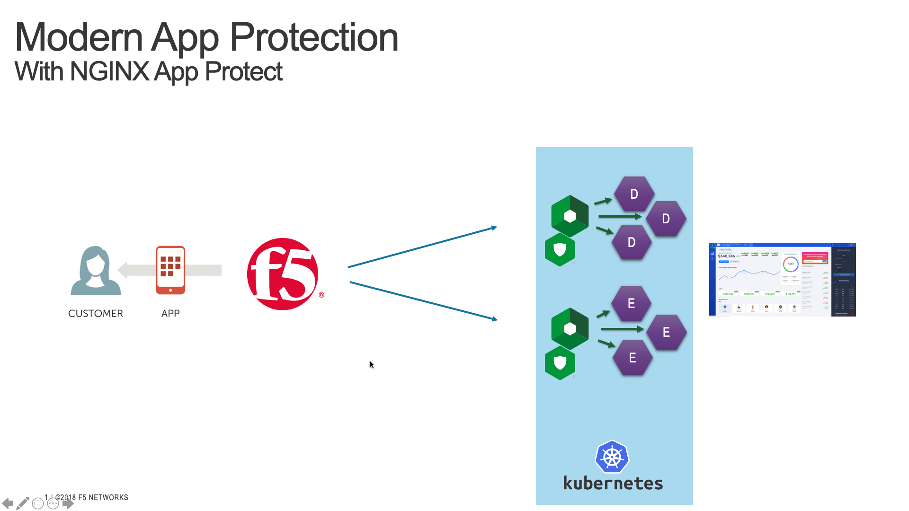
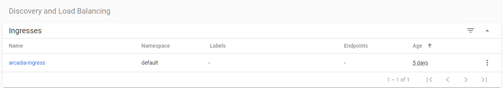

Step 11 - Deploy a new version of the NGINX Plus Ingress Controller¶
As a reminder, in Class 1 - Step 2 - Publish Arcadia App with a NGINX Plus Ingress Controller we deployed a NGINX Plus instance as an Ingress Controller in our Kubernetes cluster.
Now, with NAP v1.3, we can deploy this NGINX Plus instance with the NAP module enabled.
To do so, we will:
- Deploy a new version of the Pod (NGINX r22 + NAP v1.3)
- Deploy a new Ingress configuration template (with NAP configuration files)
Warning
The NGINX Plus Ingress Controller image is available on my private Gitlab repo. Don’t share the key.
Steps

- SSH (or WebSSH and
cd /home/ubuntu/) to CICD Server- Run this command in order to delete the previous KIC
kubectl delete -f /home/ubuntu/k8s_ingress/full_ingress_arcadia.yaml- Run this command in order to push the new version of the KIC
kubectl apply -f /home/ubuntu/k8s_ingress/full_ingress_arcadia_nap.yaml- Check the Ingress
arcadia-ingress(in thedefaultnamespace) by clicking on the 3 dots on the right andedit- Scroll down and check the specs
As you can notice, we added few lines in our Ingress declaration. To do so, I followed the guide (https://docs.nginx.com/nginx-ingress-controller/app-protect/installation/)
- I added NAP specifications (from the guide)
- I added NAP annotations for Arcadia app (see below)
---
apiVersion: extensions/v1beta1
kind: Ingress
metadata:
name: arcadia-ingress
annotations:
appprotect.f5.com/app-protect-policy: "default/dataguard-blocking"
appprotect.f5.com/app-protect-enable: "True"
appprotect.f5.com/app-protect-security-log-enable: "True"
appprotect.f5.com/app-protect-security-log: "default/logconf"
appprotect.f5.com/app-protect-security-log-destination: "syslog:server=10.1.20.6:5144"
spec:
rules:
- host: k8s.arcadia-finance.io
http:
paths:
- path: /
backend:
serviceName: main
servicePort: 80
- path: /files
backend:
serviceName: backend
servicePort: 80
- path: /api
backend:
serviceName: app2
servicePort: 80
- path: /app3
backend:
serviceName: app3
servicePort: 80
Please a make a new test by clicking on Arcadia k8s Chrome bookmark.
- Open
Chrome- Click on
Arcadia k8sbookmark- Now, you are connecting to Arcadia App from a new KIC with NAP enabled
- Send an attack (like a XSS in the address bar) by appending
?a=<script>- Attack is blocked
- Open ELK and check your logs